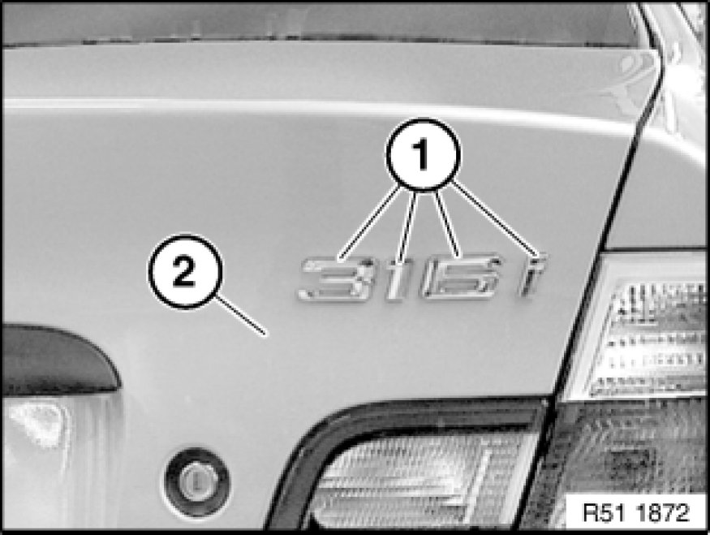
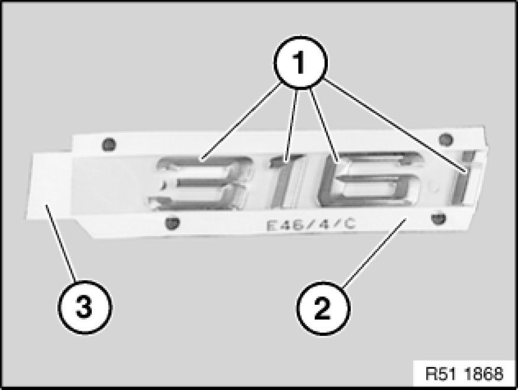

51 14 ... Instructions For Attaching Number/Letter Designation Combination
51 14 ... - Instructions for attaching number/letter designation combination

Note:
The model designation is attached with adhesive and cannot be re-used.
The model designation must be attached at room temperature.
The model designation must be removed at stove-enameling temperatures exceeding 80 °C.
Note:
The following work steps are described using the "316 i" as the example.

Removing:
Coat nylon string or strong yarn with tensides (e.g. washing-up liquid).
Cut through adhesive layer and remove model designation (1) from rear lid (2).
Remove remainder of adhesive layer with adhesive remover (sourcing reference: BMW Parts Service).

Assembly:
Number and letter combinations (1) of the model designation are not connected to each other and are supplied on a carrier film (2).
Important!
Adhesive areas must be dry and free of dust and grease.
Once it has been cleaned, do not touch the adhesive area with bare hands.
Remove liner (3) (protective strip for adhesive surface).
Press on model designation firmly.
Remove carrier film (2).